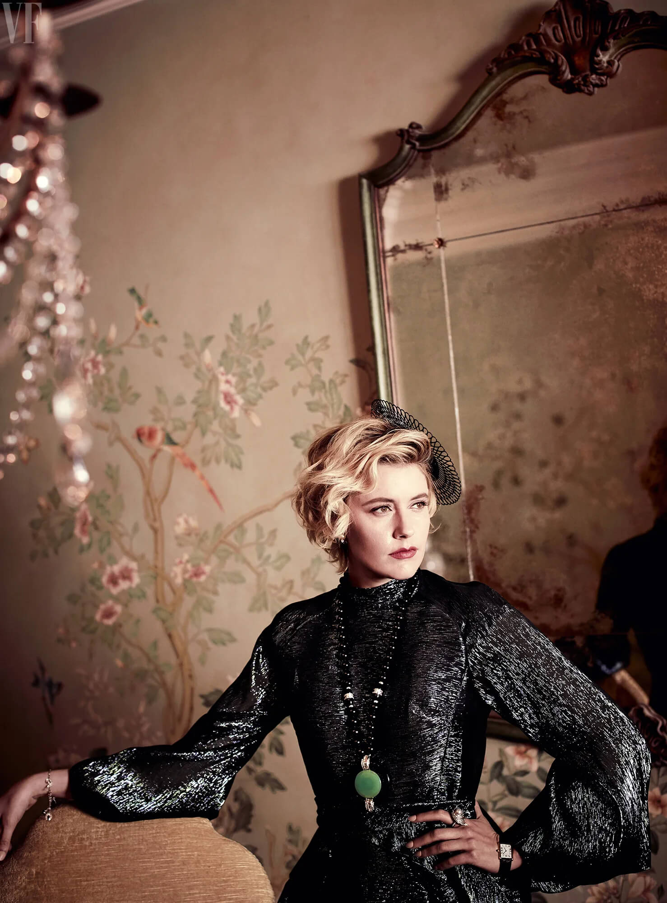
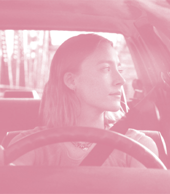
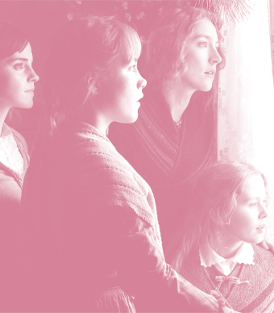
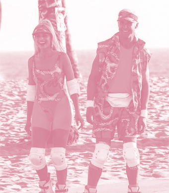

The Directorial Persuits of
Greta Gerwig
Greta Celeste Gerwig is an American director, writer, and actor. After acting in a series of films for around a decade, the young filmmaker burst onto the scene with her first solo project Lady Bird in 2018. Since then, she has been becoming one of the most influential and unapologetic female directors of our time. With each film she produces, she showcases relatable coming-of-age stories, creates life from the mundane, and depicts relationships with a fierce kindness that sets her directorial style apart.

nights and weekends
2008

lady bird
2017

little women
2019

barbie
2023